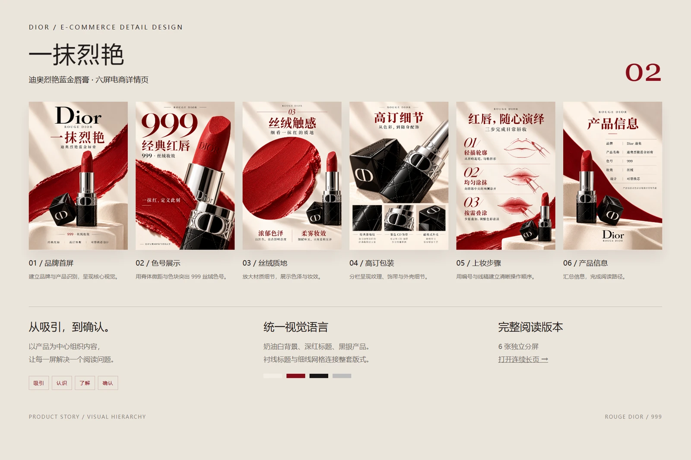
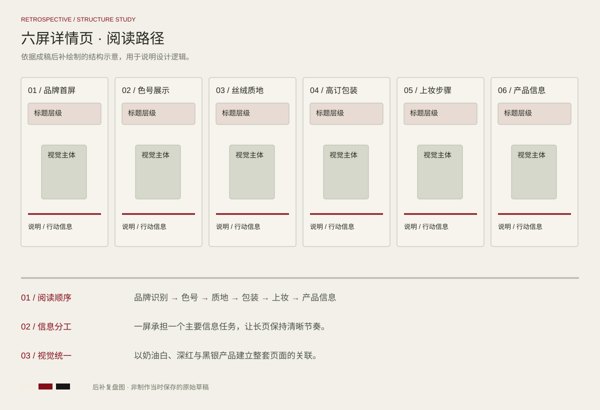

PROJECT 01 / E-COMMERCE
一抹烈艳
Dior · 六屏电商详情页
以经典红、奶油白与黑银产品构建视觉层次，将产品识别、色号、质地与使用方式串成完整的阅读路径。

完整设计 / FULL PROJECT点击图片放大查看
DESIGN REVIEW / STRUCTURE STUDY
方案复盘与版式推演
基于当前成稿后补绘制的结构示意，用于解释信息层级、构图与视觉延展；此图为方案复盘，不代表制作当时保存的原始草稿。

阅读顺序
品牌识别 → 色号 → 质地 → 包装 → 上妆 → 产品信息
信息分工
一屏承担一个主要信息任务，让长页保持清晰节奏。
视觉统一
以奶油白、深红与黑银产品建立整套页面的关联。